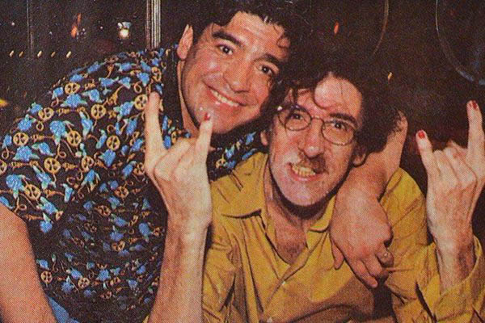

Recomendaciones

Piano Bar
Sin Lugar a dudas, mi primera recomendación debe de ser, Piano Bar. En mi corta etapa de vida, nunca logre que algo me generara tanto como este disco. Por eso es que ocupa este lugar en la pagina, particularmente fue un antes y un despues en mi vista sobre todo, desde la musica hasta mi forma de ver las cosas.

Entrevista Diego Maradona y Charly
La segunda recomendación que hago es, la entrevista de Charly con Diego Armando Maradona, una charla distendida en la cual se habla de anecdotas entre 2 amigos que no se ven hace mucho. Hablan de hechos puntuales carateristicos y logran transmitir la persona que se encuentra detras de estos dos genios.